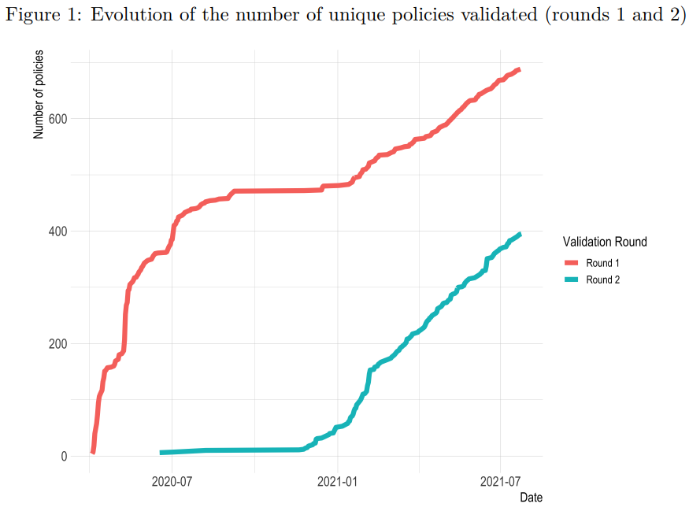

The CoronaNet data undergoes an ongoing process of cleaning, multiple-coding validation, and evaluation and reconciliation. Click through the questions below to learn more about this process!
Frequently Asked Questions:
CoronaNet’s data undergoes cleaning, multiple-coding validation, and evaluation and reconciliation.
Our team checks our raw data for logical inconsistencies and typographical errors. All data as of 4 June 2020 has been cleaned, and data coded past that date is continuously cleaned. Please contact admin@coronanet-project.org to inquire about our latest rounds of data cleaning.
We randomly sample 10% of the dataset using the source of the data (e.g. newspaper article, government press release) as our unit of randomisation. We use the source as our unit of randomisation because one source may detail many different policy types. We then provide this source to a fully independent RA and ask them to code for the government policy contained in the sampled source through a separate, but identical, survey instrument. If the source is in a language the RA cannot read, then a new source is drawn. The RA then codes all policies in the given source. This practice is repeated a third time by a third independent coder. Given the fact that each source in the sample is coded three times, we can assess the reliability of our measures and report the reliability score of each coder.
We are currently in the process of completing our second coding of the validation sample. 429 policies have been double coded—400 double-coded policies after excluding the category ‘Other policies’ from the analysis—out of the original 1,200 randomly-selected policies included in our validation set. This is equivalent to about 10% of the first new entries (11,796 policies) in the dataset. We will be gradually expanding the validation set until we cover 10% of all observations.
We check for discrepancies between the originally coded data and the second and third coding of the data through two primary methods. First, we use majority-voting to establish a consensus for policy labels. In addition, we will provide RA identification codes that will allow users to evaluate coder accuracy.
If the majority achieves consensus, then we consider the entry valid. If a discrepancy exists, a fourth RA or PI makes an assessment of the three entries to determine whether one, some, a combination of all three is most accurate. Reconciled policies are then entered into the dataset as a correction for full transparency. If an RA was found to have made a coding mistake, then we sample six of their previous entries: 3 entries which correspond to the type of mistake made (e.g. if the RA incorrectly codes an ‘External Border Restriction’ as a ‘Quarantine’, we sample 3 entries where the RA has coded a policy as being about a ‘Quarantine’) and randomly sample 3 more entries to ascertain whether the mistake was systematic or not. If systematic errors are found, entries coded by that individual will be entirely re-coded by a new RA.
The following table reports the inter-coder reliability measures of validation as of [x date]:
We expect our inter-coder reliability scores to improve as a consequence of three processes:
Our coders are becoming more experienced with the codebook and the coding tasks;
We are cleaning the dataset of obvious errors and logical inconsistencies; and
We are working on clarifying and improving the codebook and the coding system
However, we do acknowledge that some ambiguities will inevitably remain, as evident in our utility of the ‘majority voting’ validation strategy.
The following figure reports the evolution of the number of unique policies validated since the beginning of the process of coding:

The following table reports the inter-coder reliability at the current stage of validation: